GLMs: counts and ordinal outcomes
This time
- Counts: Poisson, negative binomial, offsets
- Too many zeros: zero-inflated and hurdle models (mixtures)
- Ordered categories: cumulative (ordered logit) models
- Builds on last time: likelihoods, links, and moving between the link and response scales
Negative binomial / Gamma Poisson
- Used for count data where the variance exceeds the mean, known as overdispersion. Often for the number of failures before a specified number of successes in Bernoulli trials
\[Y \sim \textrm{NB}(\mu,\phi)\]
Gamma-Poisson
The Poisson distribution has just one parameter and presumes the mean/rate is associated with the spread. The negative binomial distribution relaxes this assumption and estimates the shape (\(\phi\)) of a gamma distribution (also an exponential family distribution) to describe the Poisson rates across cases.
The gamma distribution is a non-negative, continuous, two-parameter probability distribution.
The NB as a mixture
\[ \begin{aligned} Y_i &\sim \textrm{Poisson}(\theta_i) \\ \theta_i &\sim \textrm{Gamma}(\text{shape} = \phi,\ \text{rate} = \phi / \mu) \end{aligned} \quad \Longleftrightarrow \quad Y_i \sim \textrm{NB}(\mu, \phi) \]
- \(\mu\) is the mean count; \(\phi\) (brms calls it
shape) controls overdispersion - \(\text{Var}(Y) = \mu + \mu^2/\phi\): small \(\phi\) = lots of extra variance; as \(\phi \to \infty\) it becomes a Poisson
Many gamma shapes
- There are multiple ways (different parameter definitions) to define the distribution. This gets confusing. For now just notice that many forms can be taken for the gamma distribution
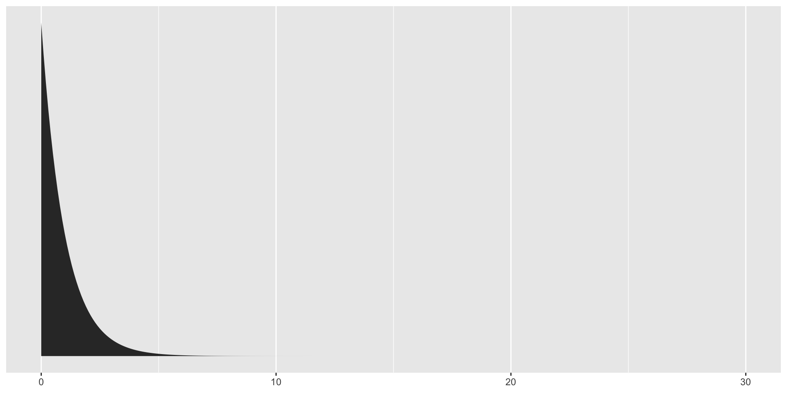
Gamma with shape = 10
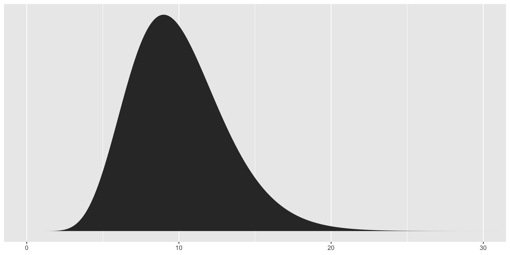
Roach example
- y: number of roaches caught
- roach1: pretreatment number of roaches
- treatment: 1 = pest-control treatment, 0 = control
- senior: 1 = building restricted to elderly residents
- exposure2: number of days the traps were out (relative to the standard period)
The roach data
# A tibble: 262 × 5
y roach1 treatment senior exposure2
<dbl> <dbl> <dbl> <dbl> <dbl>
1 153 308 1 0 0.8
2 127 331. 1 0 0.6
3 7 1.67 1 0 1
4 7 3 1 0 1
5 0 2 1 0 1.14
6 0 0 1 0 1
7 73 70 1 0 0.8
8 24 64.6 1 0 1.14
9 2 1 0 0 1
10 2 14 0 0 1.14
# ℹ 252 more rowsPoisson
\[y_i \sim \operatorname{Poisson} (\lambda_i)\]
\[\log (\lambda_i) = \beta_0 + \beta_1*X_i \]
Why 0 + Intercept?
With the default
1 + ..., brms centers the predictors behind the scenes, so yourclass = Interceptprior is a prior for the outcome at the predictors’ means (the summary converts it back for you).With
0 + Intercept + ..., the intercept is a regular coefficient (class = b, coef = "Intercept"), and its prior is for the outcome when all predictors are 0.Use
0 + Interceptwhen “all predictors = 0” is the value you can actually set a prior for (here: no roaches before, control group).
glm.7 summary
Family: poisson
Links: mu = log
Formula: y ~ 0 + Intercept + roach1 + treatment
Data: roach (Number of observations: 262)
Draws: 4 chains, each with iter = 2000; warmup = 1000; thin = 1;
total post-warmup draws = 4000
Regression Coefficients:
Estimate Est.Error l-95% CI u-95% CI Rhat Bulk_ESS Tail_ESS
Intercept 3.04 0.02 3.00 3.08 1.00 1136 1224
roach1 0.01 0.00 0.01 0.01 1.00 2446 2593
treatment -0.54 0.03 -0.59 -0.49 1.00 724 801
Draws were sampled using sample(hmc). For each parameter, Bulk_ESS
and Tail_ESS are effective sample size measures, and Rhat is the potential
scale reduction factor on split chains (at convergence, Rhat = 1).Average predictions by treatment
Predictions on the response scale
These predictions are on the original scale
Predictions on the link scale
These predictions are on the log link scale.
Prediction by hand
roach1 treatment Estimate 2.5 % 97.5 %
10 0 22.4 21.5 23.3
10 1 13.0 12.5 13.5
Type: responseBy hand, for roach1 = 10 in the treatment group:
log_rate.Intercept rate.Intercept
2.564842 12.998610 Posterior predictive check: Poisson
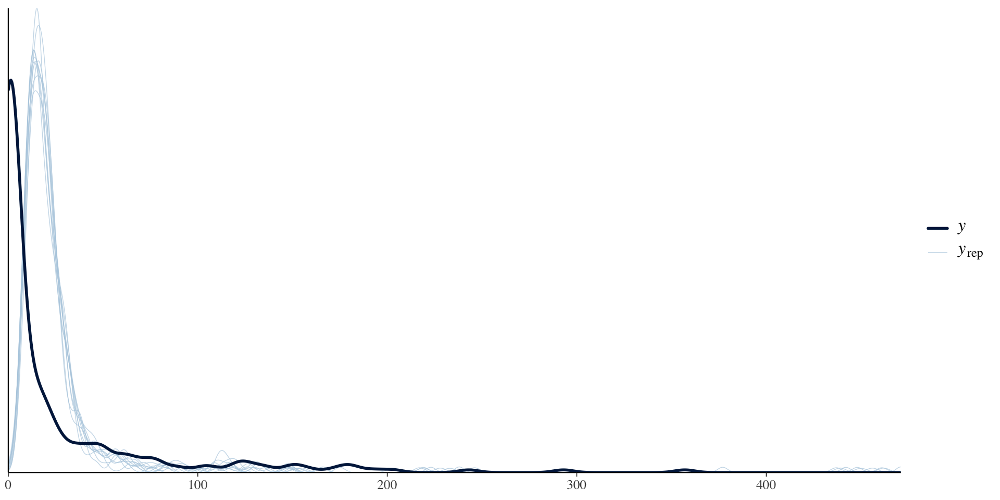
Predicted roaches by pretreatment count
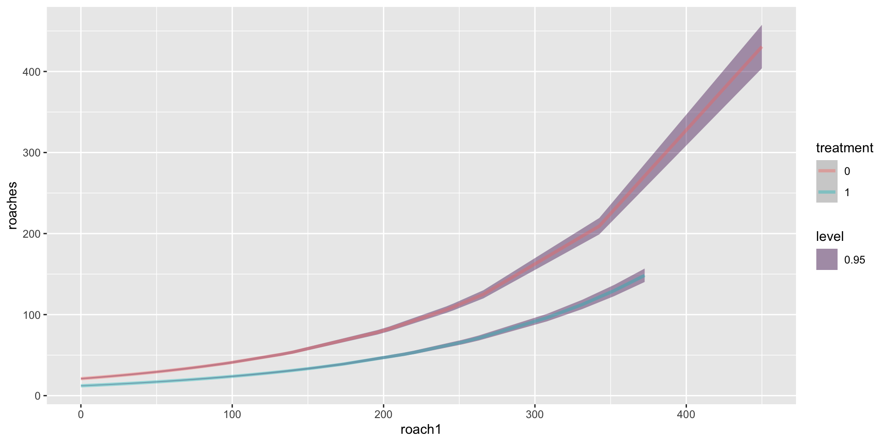
Treatment effect at the mean
Offsets
Because we are counting numbers it assumes that the time period of counting is the same across observations. However, this may not be the case.
Luckily, the Poisson (and other count distributions) assume that the rate of events is constant in time (or space), so we can adjust for it.
\[\log(\lambda_i) = \log(\text{exposure}_i) + \beta_0 + \beta_1 x_i \quad\Rightarrow\quad \lambda_i = \text{exposure}_i \times e^{\beta_0 + \beta_1 x_i}\]
This is an offset: a term with its coefficient fixed at 1. Because of the log link, the offset is the log of exposure, offset(log(exposure2)), and the other coefficients are now about the rate per unit of exposure.
Poisson with an offset
glm.7o <-
brm(family = poisson,
y ~ 0 + Intercept + roach1 + treatment + offset(log(exposure2)),
prior = c(prior(normal(2, 3), class = b, coef = "Intercept"),
prior(normal(0, 1), class = b)),
iter = 2000, warmup = 1000, cores = 4, chains = 4,
data = roach,
save_pars = save_pars(all = TRUE), # for loo(moment_match = TRUE) later
backend = "cmdstanr",
file = "glm.7o2")glm.7o summary
Note the offset is not a coefficient.
Family: poisson
Links: mu = log
Formula: y ~ 0 + Intercept + roach1 + treatment + offset(log(exposure2))
Data: roach (Number of observations: 262)
Draws: 4 chains, each with iter = 2000; warmup = 1000; thin = 1;
total post-warmup draws = 4000
Regression Coefficients:
Estimate Est.Error l-95% CI u-95% CI Rhat Bulk_ESS Tail_ESS
Intercept 3.00 0.02 2.97 3.04 1.00 915 1009
roach1 0.01 0.00 0.01 0.01 1.00 2231 2491
treatment -0.56 0.02 -0.61 -0.51 1.01 801 948
Draws were sampled using sample(hmc). For each parameter, Bulk_ESS
and Tail_ESS are effective sample size measures, and Rhat is the potential
scale reduction factor on split chains (at convergence, Rhat = 1).Predictions with the offset
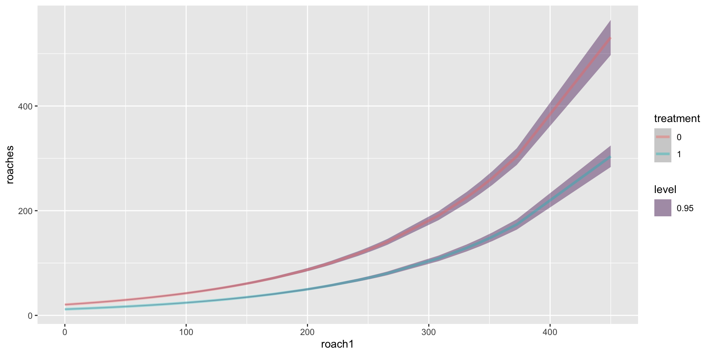
Posterior predictive check with the offset
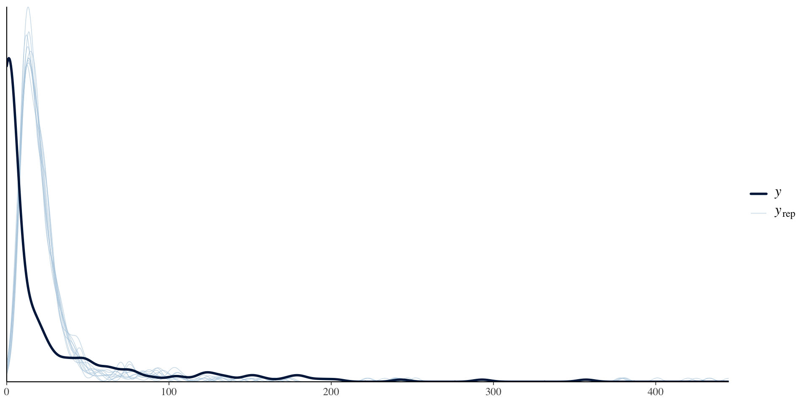
Negative binomial model
Negative binomial (Gamma Poisson) model
glm.8 summary
Family: negbinomial
Links: mu = log
Formula: y ~ 0 + Intercept + roach1 + treatment
Data: roach (Number of observations: 262)
Draws: 4 chains, each with iter = 2000; warmup = 1000; thin = 1;
total post-warmup draws = 4000
Regression Coefficients:
Estimate Est.Error l-95% CI u-95% CI Rhat Bulk_ESS Tail_ESS
Intercept 2.71 0.21 2.32 3.13 1.00 1909 2169
roach1 0.01 0.00 0.01 0.02 1.00 3116 2918
treatment -0.70 0.24 -1.16 -0.24 1.00 2170 2194
Further Distributional Parameters:
Estimate Est.Error l-95% CI u-95% CI Rhat Bulk_ESS Tail_ESS
shape 0.27 0.03 0.22 0.32 1.00 2143 2387
Draws were sampled using sample(hmc). For each parameter, Bulk_ESS
and Tail_ESS are effective sample size measures, and Rhat is the potential
scale reduction factor on split chains (at convergence, Rhat = 1).Posterior predictive check: NB
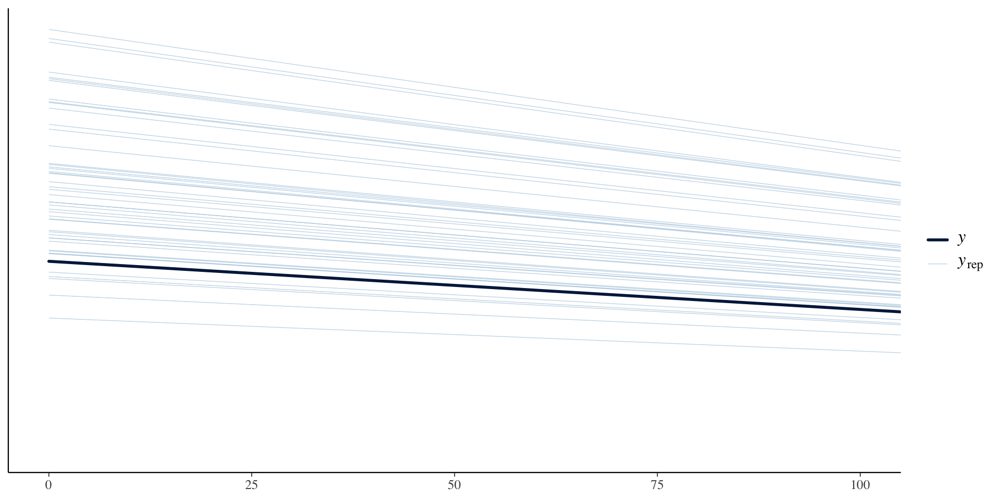
NB with tighter priors
Code
glm.8b <-
brm(family = negbinomial,
y ~ 0 + Intercept + roach1 + treatment,
prior = c(prior(normal(2, 1), class = b, coef = "Intercept"),
prior(normal(0, .5), class = b),
prior(exponential(1), class = shape)),
iter = 2000, warmup = 1000, cores = 4, chains = 4,
sample_prior = "yes",
data = roach,
file = "glm.8b",
backend = "cmdstanr")Posterior predictive check: glm.8b
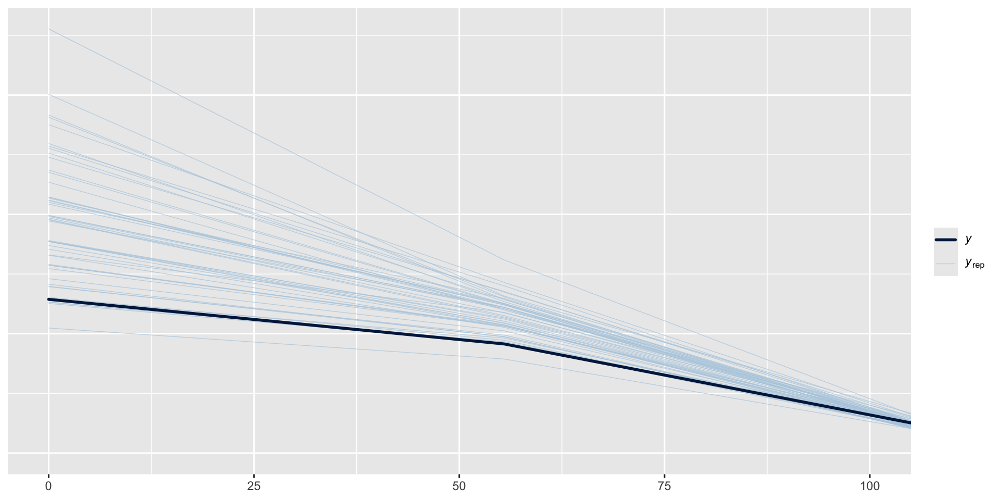
glm.8b summary
Family: negbinomial
Links: mu = log
Formula: y ~ 0 + Intercept + roach1 + treatment
Data: roach (Number of observations: 262)
Draws: 4 chains, each with iter = 2000; warmup = 1000; thin = 1;
total post-warmup draws = 4000
Regression Coefficients:
Estimate Est.Error l-95% CI u-95% CI Rhat Bulk_ESS Tail_ESS
Intercept 2.62 0.19 2.26 3.00 1.00 2257 2405
roach1 0.01 0.00 0.01 0.02 1.00 3829 2899
treatment -0.58 0.21 -1.00 -0.16 1.00 2618 2648
Further Distributional Parameters:
Estimate Est.Error l-95% CI u-95% CI Rhat Bulk_ESS Tail_ESS
shape 0.27 0.03 0.22 0.32 1.00 2760 2198
Draws were sampled using sample(hmc). For each parameter, Bulk_ESS
and Tail_ESS are effective sample size measures, and Rhat is the potential
scale reduction factor on split chains (at convergence, Rhat = 1).NB vs Poisson predictions
treatment Estimate 2.5 % 97.5 %
0 101.5 36.3 646
1 39.1 18.8 141
Type: responseTreatment effects compared
The treatment effect (on the count scale) from each model, for a household with average pretreatment roaches:
Estimate 2.5 % 97.5 %
-10.7 -20.6 -2.86
Term: treatment
Type: response
Comparison: 1 - 0AME vs MEM
avg_comparisons(model, variables = "treatment"): compute the treatment effect for every row of the real data, then average. This is the average marginal effect (AME).comparisons(model, variables = "treatment", newdata = "mean"): set the other predictors to their means, then compute the effect once. This is the marginal effect at the mean (MEM).In a Gaussian model without interactions they’re the same. With a nonlinear link they differ, because the effect on the count scale depends on where you start. AME is the usual default in economics, political science and epidemiology; emmeans-style output is closer to MEM.
AME for the NB model
Predictions for every row: NB
Predictions for every row: Poisson
The roach data
vars n mean sd median trimmed mad min max range skew
y 1 262 25.65 50.85 3 12.61 4.45 0.0 357.00 357.00 3.09
roach1 2 262 42.19 75.26 7 23.68 10.38 0.0 450.00 450.00 2.62
treatment 3 262 0.60 0.49 1 0.63 0.00 0.0 1.00 1.00 -0.42
senior 4 262 0.31 0.46 0 0.26 0.00 0.0 1.00 1.00 0.84
exposure2 5 262 1.02 0.32 1 0.98 0.00 0.2 4.29 4.09 5.09
kurtosis se
y 11.49 3.14
roach1 7.37 4.65
treatment -1.83 0.03
senior -1.30 0.03
exposure2 43.04 0.02Predictions at chosen roach1 values: NB
roach1 treatment Estimate 2.5 % 97.5 %
0 0 13.75 9.57 20.1
0 1 7.68 5.40 11.3
10 0 15.73 11.14 22.7
10 1 8.79 6.36 12.7
100 0 52.49 34.41 85.2
100 1 29.27 20.09 45.1
450 0 5460.93 855.19 51646.8
450 1 3078.94 498.42 27512.3
Type: responsePredictions at chosen roach1 values: Poisson
roach1 treatment Estimate 2.5 % 97.5 %
0 0 20.9 20.1 21.8
0 1 12.2 11.7 12.7
10 0 22.4 21.5 23.3
10 1 13.0 12.5 13.5
100 0 41.0 39.6 42.4
100 1 23.8 23.0 24.7
450 0 430.7 404.0 457.6
450 1 249.8 233.6 266.6
Type: responseNB predictions across roach1
Code
predictions(glm.8b, newdata = datagrid(roach1 = seq(from = min(roach$roach1), to = max(roach$roach1)), treatment = unique)) %>%
get_draws() %>%
mutate(treatment = as.factor(treatment)) %>%
ggplot(aes(x = roach1, y = draw, color = treatment)) +
stat_lineribbon(.width = .95, alpha = .4) + ylab("roaches")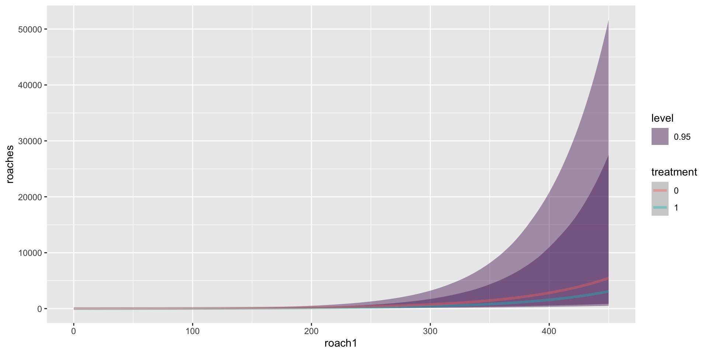
Poisson predictions across roach1

NB predictions, zoomed in
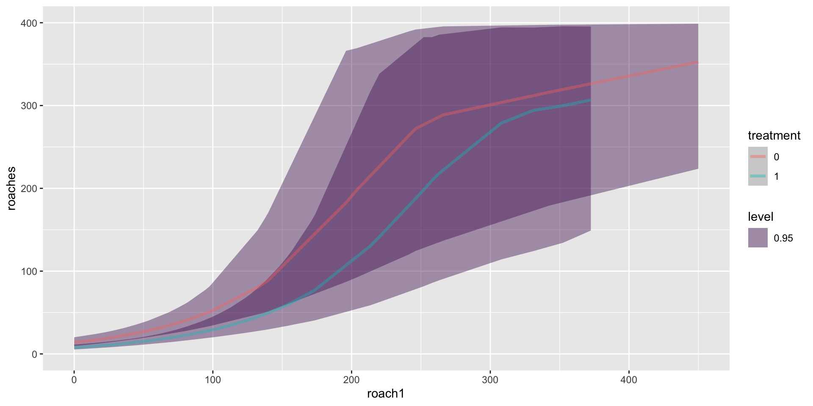
Zero-inflated models
Use when there are different causes for the same observation. These are mixture models: more than one data-generating process at once (one that makes zeros, one that makes counts).
Lots of ways to get zero counts: Missed observation or the rate is low – hard to distinguish.
Code
prob_drink <- 0.2 # 20% of days
rate_work <- 1 # average 1 manuscript per day
# sample one year of production
n <- 365
# simulate days monks drink
set.seed(365)
drink <- rbinom(n, 1, prob_drink)
# simulate manuscripts completed
y <- (1 - drink) * rpois(n, rate_work)
x <- rnorm(n = 365, mean = 3, sd = 1)
zips <-tibble(drink = factor(drink, levels = 1:0), y = y, x = x)
x2 <- zips$y + zips$x
zips <-tibble(drink = factor(drink, levels = 1:0), y = y, x = x2)
ggplot(data = zips, aes(x = y)) +
geom_histogram(aes(fill = drink),
binwidth = 1, linewidth = 1/10, color = "grey92") +
scale_fill_manual(values = 1:2) +
xlab("Manuscripts completed") +
theme(legend.position = "none")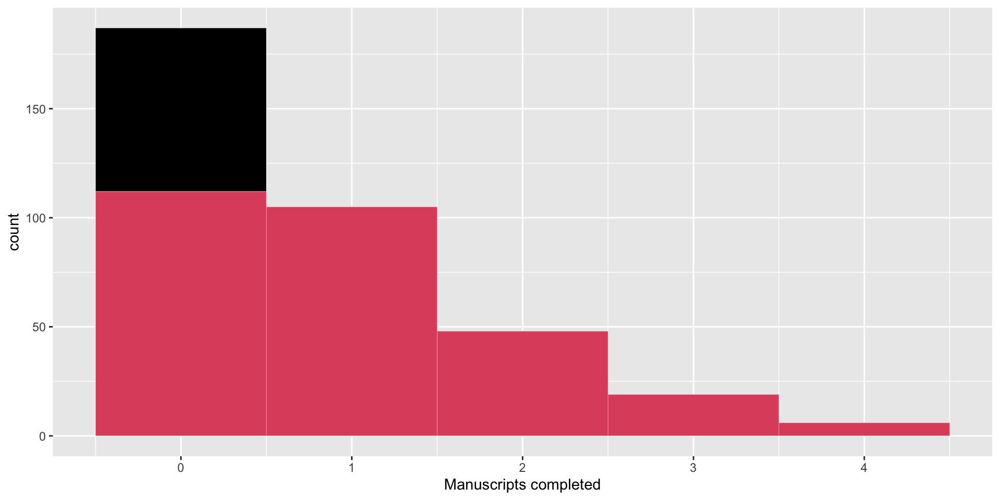
ZIP Zero inflated poisson
p = the probability of drinking (vs working). If drinking we know no manuscripts are created. If working, manuscripts still may not be created. The count is modeled as a Poisson with rate λ, and drinking as a Bernoulli with probability p
\[\operatorname{Pr} (y = 0 | p, \lambda) = \operatorname{Pr} (\text{drink} | p) + \operatorname{Pr} (\text{work} | p) \times \operatorname{Pr} (0 | \lambda)\] \[= p + (1 - p) \exp (- \lambda)\]
Zeros and non-zeros
The probability of observing a zero is the probability that the monks drank, OR the probability that the monks worked AND failed to finish anything
\[\operatorname{Pr} (y | y > 0, p, \lambda) = \] \[ \operatorname{Pr} (\text{drink} | p) (0) + \operatorname{Pr} (\text{work} | p) \operatorname{Pr} (y | \lambda) = (1 - p) \frac {\lambda^y \exp (- \lambda)}{y!}\] Since drinking monks never produce, the expression above is the chance the monks both work (1-p), and finish y manuscripts
The ZIP model
\[y_i \sim \operatorname{ZIPoisson} (p_i, \lambda_i)\] \[\operatorname{logit} (p_i) = \alpha_p + \beta_p x_i\] \[\log (\lambda_i) = \alpha_\lambda + \beta_\lambda x_i\]
Intercept-only ZIP
Priors for zi
Code
zip.priors <-
c(prior(beta(1, 1), class = zi),
prior(beta(2, 6), class = zi))
zip.priors %>%
parse_dist(prior) %>%
ggplot(aes(y = prior, dist = .dist, args = .args, fill = prior)) +
stat_dist_halfeye(.width = .95) +
scale_x_continuous("zi", breaks = c(0, .5, 1)) +
ylab(NULL) +
theme(legend.position = "none")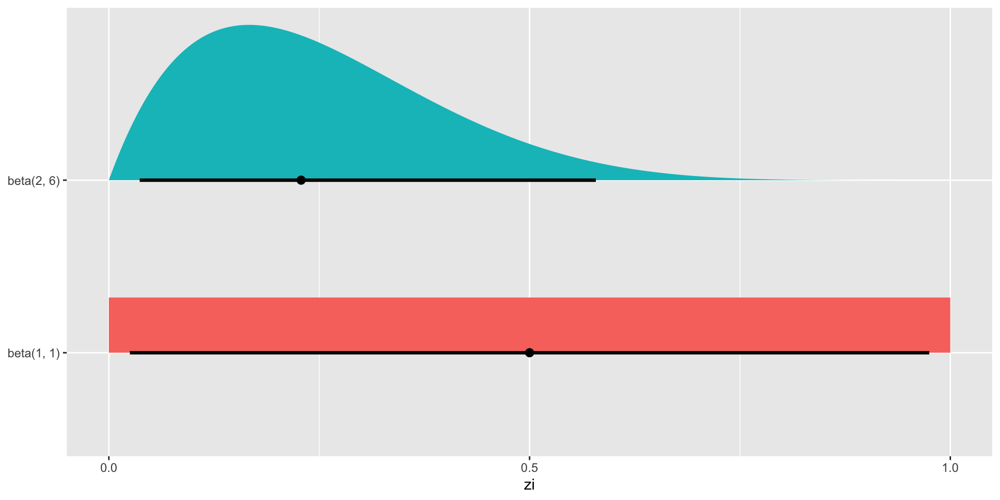
glm.9 summary
Note: when there are no predictors for zi, brms estimates zi directly as a probability (identity link). With predictors it uses a logit link, so interpret those coefficients like a logistic regression. The count part uses a log link: an Intercept of −.02 means λ = exp(−.02) ≈ .98 manuscripts per working day (we simulated 1).
Family: zero_inflated_poisson
Links: mu = log
Formula: y ~ 1
Data: zips (Number of observations: 365)
Draws: 4 chains, each with iter = 2000; warmup = 1000; thin = 1;
total post-warmup draws = 4000
Regression Coefficients:
Estimate Est.Error l-95% CI u-95% CI Rhat Bulk_ESS Tail_ESS
Intercept -0.02 0.09 -0.20 0.15 1.01 1173 1363
Further Distributional Parameters:
Estimate Est.Error l-95% CI u-95% CI Rhat Bulk_ESS Tail_ESS
zi 0.21 0.06 0.10 0.32 1.01 1303 1475
Draws were sampled using sample(hmc). For each parameter, Bulk_ESS
and Tail_ESS are effective sample size measures, and Rhat is the potential
scale reduction factor on split chains (at convergence, Rhat = 1).Predictors for both parts
Adding predictors. Do not necessarily need to have the same predictors for each process. One can predict the excess zeros, the other can predict the counts.
glm.10 summary
Family: zero_inflated_poisson
Links: mu = log; zi = logit
Formula: y ~ 1 + x
zi ~ 1 + x
Data: zips (Number of observations: 365)
Draws: 4 chains, each with iter = 2000; warmup = 1000; thin = 1;
total post-warmup draws = 4000
Regression Coefficients:
Estimate Est.Error l-95% CI u-95% CI Rhat Bulk_ESS Tail_ESS
Intercept -2.47 0.27 -2.97 -1.93 1.00 1089 1500
zi_Intercept 3.53 2.65 -3.08 8.16 1.00 1195 1424
x 0.53 0.05 0.43 0.62 1.00 1156 1723
zi_x -1.94 0.84 -3.80 -0.37 1.00 1124 958
Draws were sampled using sample(hmc). For each parameter, Bulk_ESS
and Tail_ESS are effective sample size measures, and Rhat is the potential
scale reduction factor on split chains (at convergence, Rhat = 1).Often the associations can go in different directions (because they are modeling different processes!)
Plotting both parts
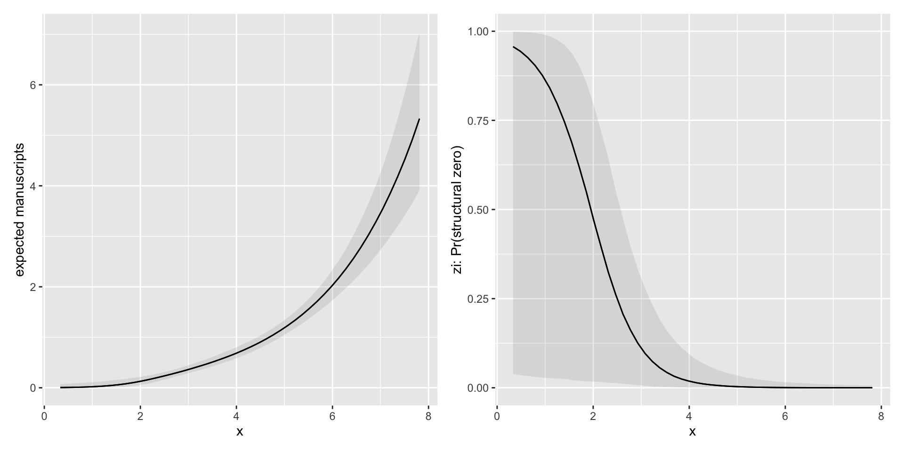
Revisit roaches
Code
glm.8c <-
brm(family = zero_inflated_poisson,
y ~ 0 + Intercept + roach1 + treatment + offset(log(exposure2)),
prior = c(prior(normal(2, 1), class = b, coef = "Intercept"),
prior(normal(0, .5), class = b),
prior(beta(1, 1), class = zi)),
iter = 2000, warmup = 1000, cores = 4, chains = 4,
init = 0, # random inits up to ±2 make exp(b * 450 roaches) explode
save_pars = save_pars(all = TRUE),
data = roach,
file = "glm.8c2",
backend = "cmdstanr")glm.8c summary
Family: zero_inflated_poisson
Links: mu = log
Formula: y ~ 0 + Intercept + roach1 + treatment + offset(log(exposure2))
Data: roach (Number of observations: 262)
Draws: 4 chains, each with iter = 2000; warmup = 1000; thin = 1;
total post-warmup draws = 4000
Regression Coefficients:
Estimate Est.Error l-95% CI u-95% CI Rhat Bulk_ESS Tail_ESS
Intercept 3.44 0.02 3.40 3.48 1.00 1373 1651
roach1 0.01 0.00 0.01 0.01 1.00 2931 2876
treatment -0.49 0.02 -0.54 -0.44 1.00 1302 1911
Further Distributional Parameters:
Estimate Est.Error l-95% CI u-95% CI Rhat Bulk_ESS Tail_ESS
zi 0.36 0.03 0.30 0.42 1.00 1928 1864
Draws were sampled using sample(hmc). For each parameter, Bulk_ESS
and Tail_ESS are effective sample size measures, and Rhat is the potential
scale reduction factor on split chains (at convergence, Rhat = 1).Posterior predictive check: ZIP
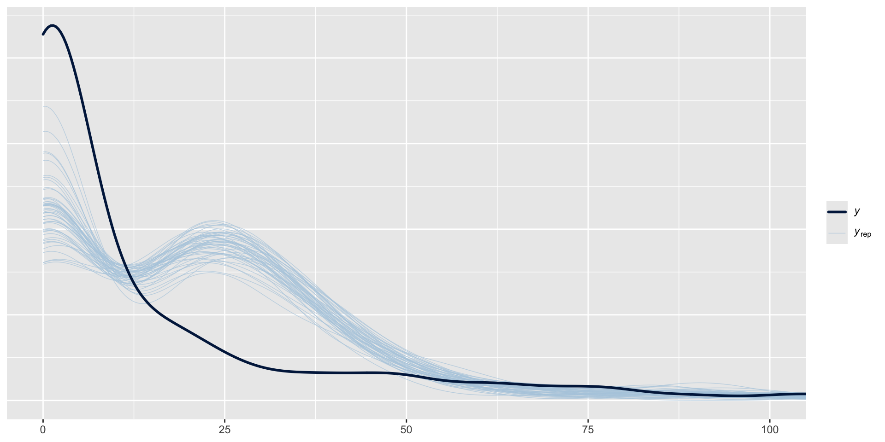
Predictors for the zero part too
Code
glm.8d <-
brm(bf(y ~ 0 + Intercept + roach1 + treatment + offset(log(exposure2)),
zi ~ 0 + Intercept + roach1 + treatment),
family = zero_inflated_poisson,
prior = c(prior(normal(2, 1), class = b, coef = "Intercept"),
prior(normal(0, .5), class = b),
prior(normal(0, 1), class = b, dpar = "zi")),
iter = 2000, warmup = 1000, cores = 4, chains = 4,
init = 0,
save_pars = save_pars(all = TRUE),
data = roach,
file = "glm.8d3",
backend = "cmdstanr")glm.8d summary
Family: zero_inflated_poisson
Links: mu = log; zi = logit
Formula: y ~ 0 + Intercept + roach1 + treatment + offset(log(exposure2))
zi ~ 0 + Intercept + roach1 + treatment
Data: roach (Number of observations: 262)
Draws: 4 chains, each with iter = 2000; warmup = 1000; thin = 1;
total post-warmup draws = 4000
Regression Coefficients:
Estimate Est.Error l-95% CI u-95% CI Rhat Bulk_ESS Tail_ESS
Intercept 3.44 0.02 3.40 3.48 1.00 1865 1689
roach1 0.01 0.00 0.01 0.01 1.00 3312 3259
treatment -0.49 0.02 -0.54 -0.44 1.00 1856 2150
zi_Intercept -0.31 0.23 -0.76 0.14 1.00 1591 2230
zi_roach1 -0.03 0.01 -0.04 -0.02 1.00 2779 2308
zi_treatment 0.60 0.29 0.05 1.17 1.00 1447 1918
Draws were sampled using sample(hmc). For each parameter, Bulk_ESS
and Tail_ESS are effective sample size measures, and Rhat is the potential
scale reduction factor on split chains (at convergence, Rhat = 1).Posterior predictive check: glm.8d
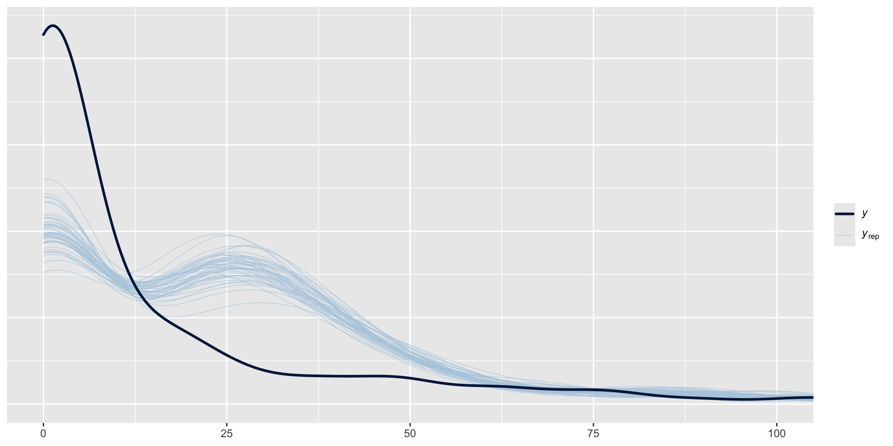
glm.8d predictions
Code
predictions(glm.8d,newdata = datagrid(roach1 = seq(from = min(roach$roach1), to = max(roach$roach1)), treatment = unique)) %>%
get_draws() %>%
mutate(treatment = as.factor(treatment)) %>%
ggplot(aes(x = roach1, y = draw, color = treatment)) +
stat_lineribbon(.width = .95, alpha = .4) + ylab("roaches")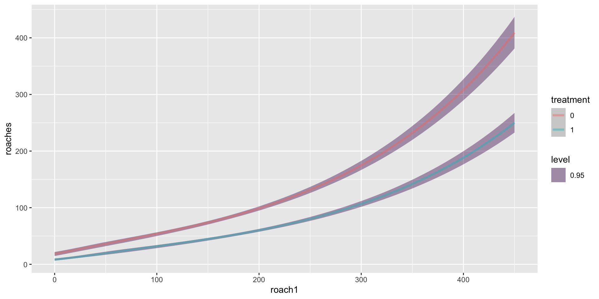
Log-transforming roach1
Code
glm.8e <-
brm(bf(y ~ 0 + Intercept + I(log(roach1 + 1)) + treatment + offset(log(exposure2)),
zi ~ 0 + Intercept + I(log(roach1 + 1)) + treatment),
family = zero_inflated_poisson,
prior = c(prior(normal(2, 1), class = b, coef = "Intercept"),
prior(normal(0, 1), class = b),
prior(normal(0, 1), class = b, dpar = "zi")),
iter = 2000, warmup = 1000, cores = 4, chains = 4,
save_pars = save_pars(all = TRUE),
data = roach,
file = "glm.8e2",
backend = "cmdstanr")glm.8e summary
Family: zero_inflated_poisson
Links: mu = log; zi = logit
Formula: y ~ 0 + Intercept + I(log(roach1 + 1)) + treatment + offset(log(exposure2))
zi ~ 0 + Intercept + I(log(roach1 + 1)) + treatment
Data: roach (Number of observations: 262)
Draws: 4 chains, each with iter = 2000; warmup = 1000; thin = 1;
total post-warmup draws = 4000
Regression Coefficients:
Estimate Est.Error l-95% CI u-95% CI Rhat Bulk_ESS Tail_ESS
Intercept 2.28 0.04 2.20 2.36 1.00 2619 2283
Ilogroach1P1 0.48 0.01 0.46 0.50 1.00 2522 2178
treatment -0.64 0.02 -0.69 -0.59 1.00 3713 2523
zi_Intercept 0.36 0.27 -0.17 0.88 1.00 2711 2684
zi_Ilogroach1P1 -0.77 0.10 -0.98 -0.57 1.00 3143 2313
zi_treatment 0.78 0.30 0.20 1.36 1.00 2785 2533
Draws were sampled using sample(hmc). For each parameter, Bulk_ESS
and Tail_ESS are effective sample size measures, and Rhat is the potential
scale reduction factor on split chains (at convergence, Rhat = 1).Posterior predictive check: glm.8e
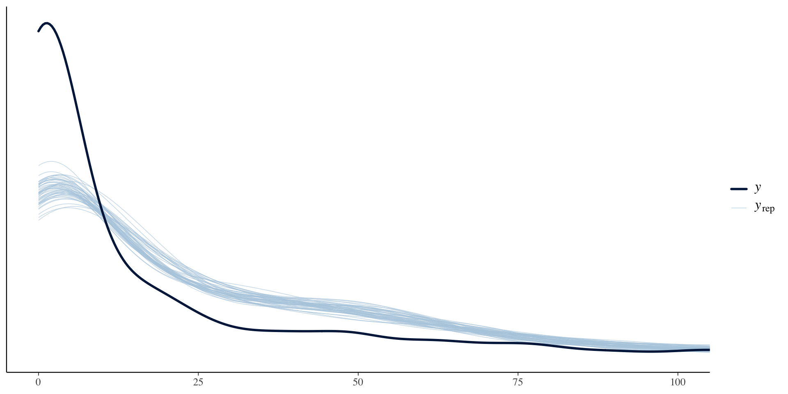
glm.8e predictions
Big difference from before
Code
predictions(glm.8e,newdata = datagrid(roach1 = seq(from = min(roach$roach1), to = max(roach$roach1)), treatment = unique)) %>%
get_draws() %>%
mutate(treatment = as.factor(treatment)) %>%
ggplot(aes(x = roach1, y = draw, color = treatment)) +
stat_lineribbon(.width = .95, alpha = .4) + ylab("roaches")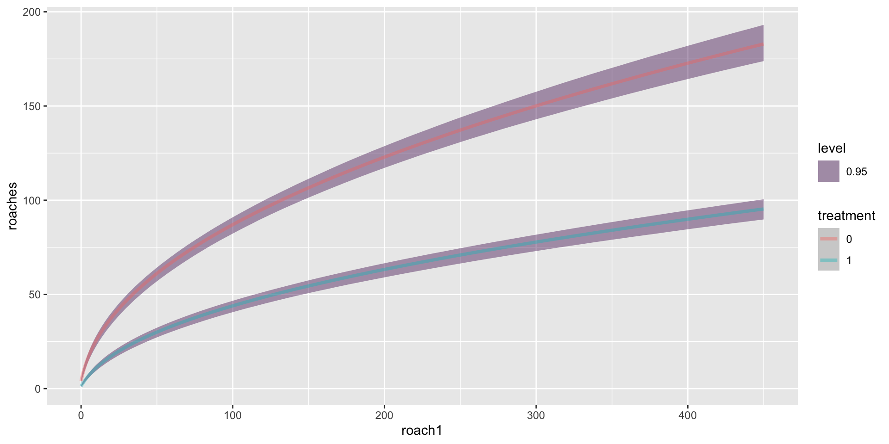
Compare roach models
To compare fairly, all three need the same offset. glm.8b2 is glm.8b plus offset(log(exposure2)):
Code
glm.8b2 <-
brm(family = negbinomial,
y ~ 0 + Intercept + roach1 + treatment + offset(log(exposure2)),
prior = c(prior(normal(2, 1), class = b, coef = "Intercept"),
prior(normal(0, .5), class = b),
prior(exponential(1), class = shape)),
iter = 2000, warmup = 1000, cores = 4, chains = 4,
save_pars = save_pars(all = TRUE),
data = roach,
file = "glm.8b2",
backend = "cmdstanr")# add_criterion() stores the result in the model's file, so it's only computed once
glm.7o <- add_criterion(glm.7o, "loo", moment_match = TRUE)
glm.8b2 <- add_criterion(glm.8b2, "loo", moment_match = TRUE)
glm.8e <- add_criterion(glm.8e, "loo", moment_match = TRUE)
loo_compare(glm.7o, glm.8b2, glm.8e) model elpd_diff se_diff p_worse diag_diff diag_elpd
glm.8b2 0.0 0.0 NA
glm.8e -3284.5 572.5 1.00
glm.7o -5442.6 705.6 1.00 Checking count models: rootograms
A rootogram compares observed and predicted counts at each value. Bars hanging from the curve that don’t reach 0 = the model’s frequencies are off.
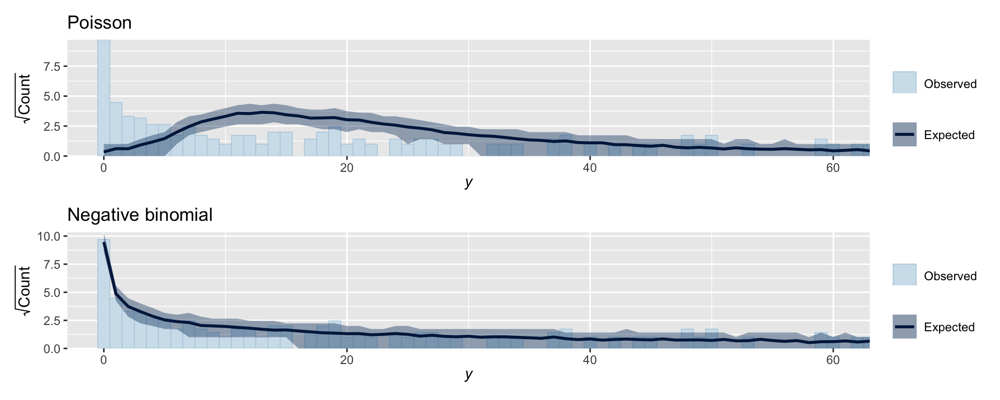
Checking count models: variance and zeros
Does the model reproduce the data’s variance and its number of zeros? type = "stat" compares one statistic of the data (dark line) to the same statistic in each simulated dataset.
Code
prop_zero <- function(y) mean(y == 0)
log10_var <- function(y) log10(var(y))
(pp_check(glm.7o, type = "stat", stat = "log10_var") + ggtitle("Poisson: log10(variance)")) +
(pp_check(glm.8b2, type = "stat", stat = "log10_var") + ggtitle("NB: log10(variance)")) +
(pp_check(glm.7o, type = "stat", stat = "prop_zero") + ggtitle("Poisson: share of zeros")) +
(pp_check(glm.8b2, type = "stat", stat = "prop_zero") + ggtitle("NB: share of zeros")) +
plot_layout(ncol = 2, guides = "collect") & theme(legend.position = "none")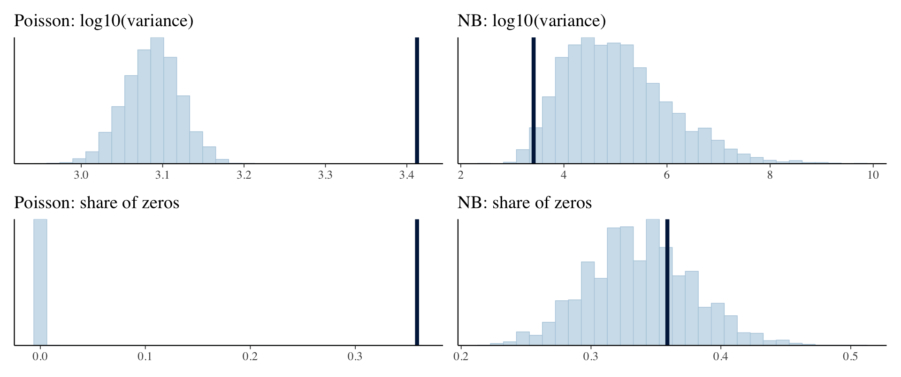
What the checks say
- Poisson: simulated variances are about half the real one, and it predicts essentially no zeros (the data have 36%).
- NB: gets the zeros right (about 34%), but overshoots the variance, sometimes by orders of magnitude: some simulated datasets contain counts in the thousands (the real maximum is 357).
- Why?
roach1enters on the log scale raw, so apartments with 300+ pretreatment roaches get enormous predicted means. Usinglog(roach1 + 1)as the predictor (as inglm.8ebelow) is one fix. - A model can win LOO and still fail a check. Do both.
Rate ratios
With a log link, exp() of a coefficient is a rate ratio: the multiplicative change in the expected count. As with odds ratios, exponentiate the draws:
# A tibble: 1 × 6
rate_ratio .lower .upper .width .point .interval
<dbl> <dbl> <dbl> <dbl> <chr> <chr>
1 0.547 0.348 0.843 0.95 median qi Treated apartments are expected to have about 45% fewer roaches per trap-day than control apartments with the same pretreatment count.
Hurdle models/zero augmented
Also mixture (two-part) models, which specify one process for zero counts and another process for positive counts. The idea is that positive counts occur once a threshold is crossed.
Intercept-only hurdle model
glm.11 summary
Family: hurdle_poisson
Links: mu = log
Formula: y ~ 1
autocor ~ tructure(list(), class = "formula", .Environment = <environment>)
Data: zips (Number of observations: 365)
Draws: 4 chains, each with iter = 2000; warmup = 1000; thin = 1;
total post-warmup draws = 4000
Regression Coefficients:
Estimate Est.Error l-95% CI u-95% CI Rhat Bulk_ESS Tail_ESS
Intercept -0.01 0.09 -0.20 0.16 1.00 3648 3040
Further Distributional Parameters:
Estimate Est.Error l-95% CI u-95% CI Rhat Bulk_ESS Tail_ESS
hu 0.51 0.03 0.46 0.57 1.00 3263 2484
Draws were sampled using sample(hmc). For each parameter, Bulk_ESS
and Tail_ESS are effective sample size measures, and Rhat is the potential
scale reduction factor on split chains (at convergence, Rhat = 1).Hurdle model with a predictor
glm.11x summary
Family: hurdle_poisson
Links: mu = log
Formula: y ~ 1 + x
autocor ~ tructure(list(), class = "formula", .Environment = <environment>)
Data: zips (Number of observations: 365)
Draws: 4 chains, each with iter = 2000; warmup = 1000; thin = 1;
total post-warmup draws = 4000
Regression Coefficients:
Estimate Est.Error l-95% CI u-95% CI Rhat Bulk_ESS Tail_ESS
Intercept -3.18 0.42 -4.05 -2.37 1.00 1609 1596
x 0.62 0.07 0.48 0.76 1.00 1701 1905
Further Distributional Parameters:
Estimate Est.Error l-95% CI u-95% CI Rhat Bulk_ESS Tail_ESS
hu 0.51 0.03 0.46 0.56 1.00 2557 1767
Draws were sampled using sample(hmc). For each parameter, Bulk_ESS
and Tail_ESS are effective sample size measures, and Rhat is the potential
scale reduction factor on split chains (at convergence, Rhat = 1).Expected counts with tidybayes
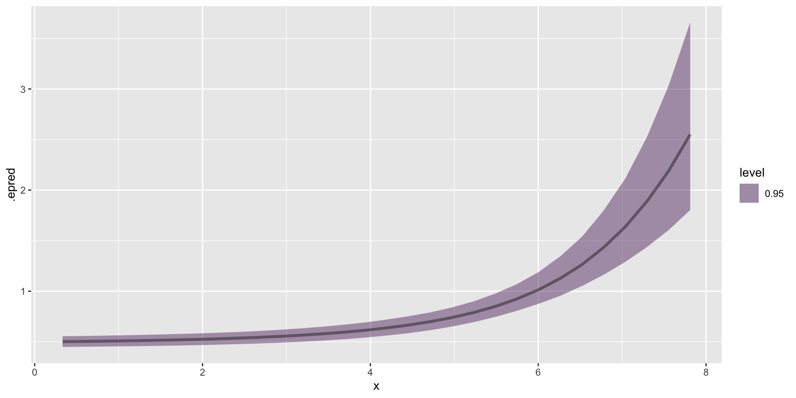
Both parts with marginaleffects
With {marginaleffects}
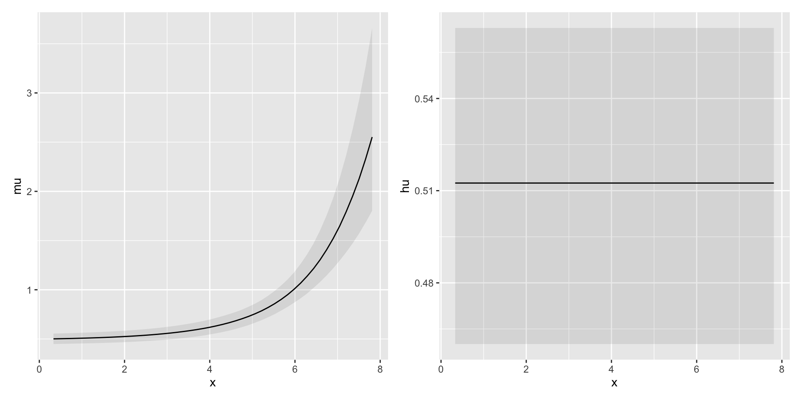
Posterior predictive check: hurdle
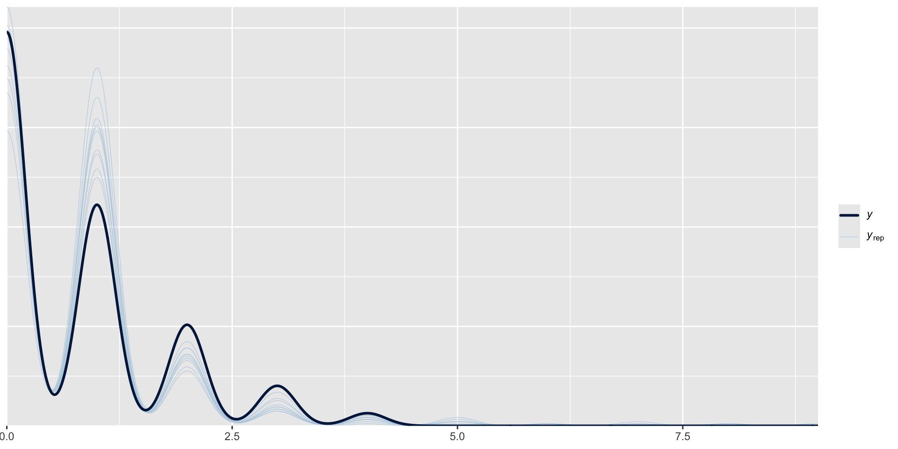
Do we need a zero model at all?
Zero-inflated and hurdle versions of the negative binomial, with the same offset and predictors as glm.8b2:
Code
nb_priors <- c(prior(normal(2, 1), class = b, coef = "Intercept"),
prior(normal(0, .5), class = b),
prior(exponential(1), class = shape))
glm.8f <- brm(family = zero_inflated_negbinomial,
y ~ 0 + Intercept + roach1 + treatment + offset(log(exposure2)),
prior = c(nb_priors, prior(beta(1, 1), class = zi)),
iter = 2000, warmup = 1000, cores = 4, chains = 4, init = 0,
save_pars = save_pars(all = TRUE), data = roach, backend = "cmdstanr", file = "glm.8f")
glm.8g <- brm(family = hurdle_negbinomial,
y ~ 0 + Intercept + roach1 + treatment + offset(log(exposure2)),
prior = c(nb_priors, prior(beta(1, 1), class = hu)),
iter = 2000, warmup = 1000, cores = 4, chains = 4, init = 0,
save_pars = save_pars(all = TRUE), data = roach, backend = "cmdstanr", file = "glm.8g")Often the NB is enough
Estimate Est.Error l-95% CI u-95% CI
shape 0.31 0.05 0.24 0.43
zi 0.07 0.05 0.00 0.19- The ZINB says only about 7% of apartments are “structural zeros” (interval nearly touching 0), and it predicts no better than the plain NB.
- The NB’s extra variance already produces plenty of zeros. Zero-inflation was needed for the Poisson, not for the counts.
- The hurdle NB does worse here: it says every zero comes from the zero process, so it can’t use roach1 and treatment to explain the zeros the same way.
- Lesson: try the NB first, check the zeros with
pp_check(type = "stat"), and add a zero model only if it is still missing them (or if you have a theory of where the zeros come from).
Ordinal regression models
likert scales never, sometimes, often no degree, hs degree, some college, college degree
discrete, defined order, distance between categories is unknown
common assumption is to treat differences as the same and model it as continuous with a Gaussian
Log cumulative odds link
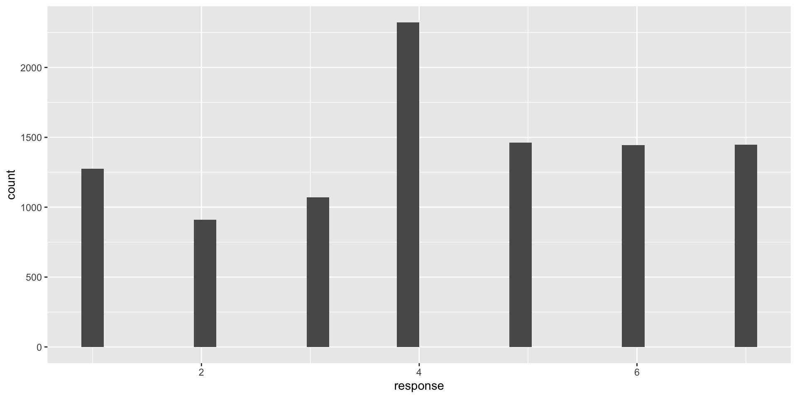
Proportion of each response
Code
p2 <-
trolley %>%
count(response) %>%
mutate(pr_k = n / nrow(trolley),
cum_pr_k = cumsum(pr_k)) %>%
ggplot(aes(x = response, y = pr_k,
fill = response)) +
geom_line() +
geom_point(shape = 21, color = "grey92",
size = 2.5, stroke = 1) +
scale_x_continuous(breaks = 1:8) +
scale_y_continuous(" proportion",
limits = c(0, .35)) +
theme(axis.ticks = element_blank(),
axis.title.y = element_text(angle = 90),
legend.position = "none")
p2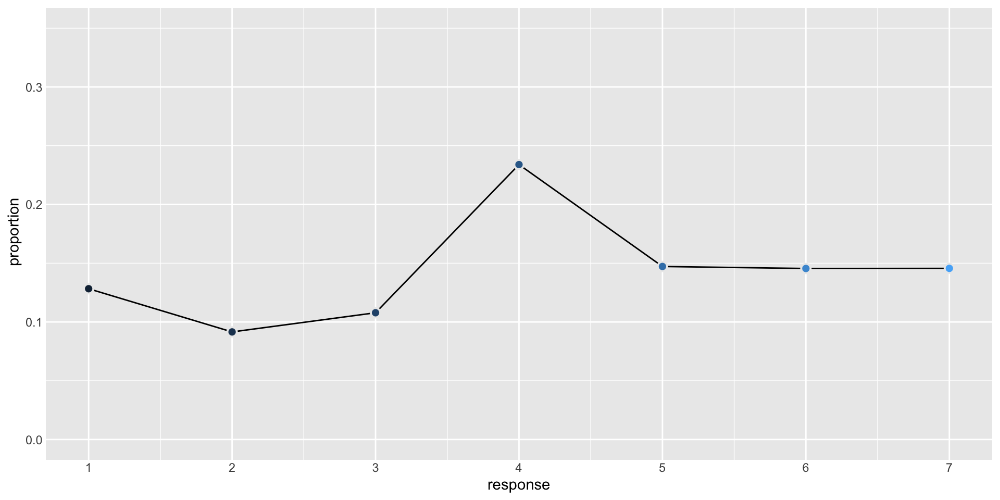
Cumulative proportions
Cumulative proportion. Each choice is larger than the previous
Code
p2b <-
trolley %>%
count(response) %>%
mutate(pr_k = n / nrow(trolley),
cum_pr_k = cumsum(pr_k)) %>%
ggplot(aes(x = response, y = cum_pr_k,
fill = response)) +
geom_line() +
geom_point(shape = 21, color = "grey92",
size = 2.5, stroke = 1) +
scale_x_continuous(breaks = 1:8) +
scale_y_continuous("cumulative proportion",
breaks = c(0, .25, .5, .75, 1), limits = c(0, 1.1)) +
theme(axis.ticks = element_blank(),
axis.title.y = element_text(angle = 90),
legend.position = "none")
p2b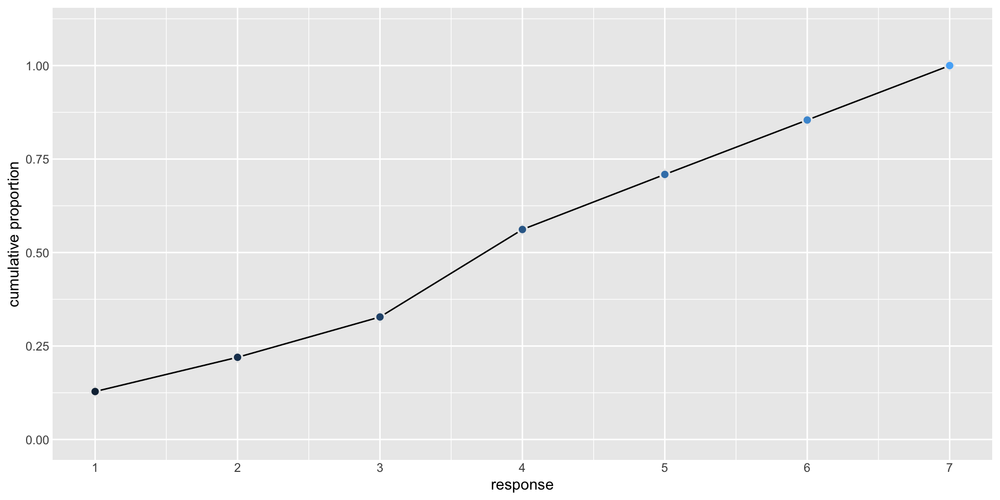
Cumulative probability
- The cumulative probability of a value is the probability of that value or any smaller value. In the context of ordered categories, the cumulative probability of 3 is the sum of the probabilities of 3, 2, and 1
Probability of each response
Logic:
Probability of any observation is just counting up the cumulative proportion for values to the left of the cut points.
Thus option 1 refers to all values up to the first. Option two is values to the left of cut point 2 and to the right of cut point 1.
We will discuss in terms of the probability of x being less than or equal to some cut point.
Thus what is the probability of getting a 5? It is the cumulative probability of getting a 5 or less subtracting the cumulative probability of getting a 4 or less.
Cumulative log odds
We can change this into cumulative log odds, where each response value is represented as a logit.
This changes the x axis, making different cut points that represent the cumulative log odds of getting a 4, for example.
The cumulative log odds of a 7 (or less) is infinite, because Pr(y ≤ 7) = 1. A logit of 0 means 50% of responses are at or below that cut point; −2 means about 12%; +2 means about 88%.
Why logits? Because we want to predict an ordered outcome.
Estimating the cut points
We want to estimate the cutpoints
\[\text{logit}(Pr(y_i \leq k)) = \log\left(\dfrac{Pr(y_i \leq k)}{1-Pr(y_i \leq k)}\right)\]
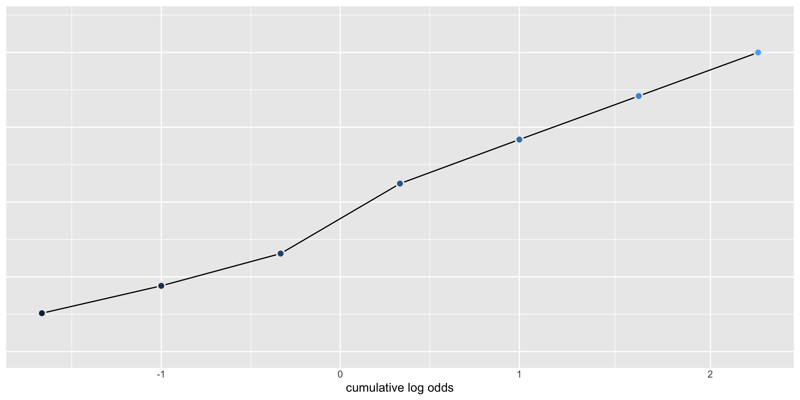
Cut points as intercepts
We will have intercepts for each response option, each on the log-cumulative-odds scale. Run through the inverse logit, they are the cumulative probability of each outcome.
\(\alpha_k\) is an “intercept” unique to each possible outcome value k. We are estimating the probability of some response \(y_i\) being equal to or less than some category. E.g., the cumulative probability of getting a 5? It is the proportion of values that are 5 or less.
\[\log \frac{\operatorname{Pr}(y_i \leq k)}{1 - \operatorname{Pr}(y_i \leq k)} = \alpha_k\]
Cut points by hand
Code
# A tibble: 7 × 5
response n pr_k cum_pr_k alpha
<dbl> <int> <dbl> <dbl> <dbl>
1 1 1274 0.128 0.128 -1.92
2 2 909 0.0915 0.220 -1.27
3 3 1071 0.108 0.328 -0.72
4 4 2323 0.234 0.562 0.25
5 5 1462 0.147 0.709 0.89
6 6 1445 0.146 0.854 1.77
7 7 1446 0.146 1 NaN Counts, proportions, and log-cumulative-odds
Code
p1 <-
trolley %>%
ggplot(aes(x = response, fill = after_stat(x))) +
geom_histogram(binwidth = 1/4) +
scale_fill_gradient(low = "grey",
high = "black") +
scale_x_continuous(breaks = 1:7) +
theme(axis.ticks = element_blank(),
axis.title.y = element_text(angle = 90),
legend.position = "none")
p2 <-
trolley %>%
count(response) %>%
mutate(pr_k = n / nrow(trolley),
cum_pr_k = cumsum(pr_k)) %>%
ggplot(aes(x = response, y = pr_k,
fill = response)) +
geom_line() +
geom_point(shape = 21, color = "grey92",
size = 2.5, stroke = 1) +
scale_x_continuous(breaks = 1:8) +
scale_y_continuous(" proportion",
limits = c(0, .35)) +
theme(axis.ticks = element_blank(),
axis.title.y = element_text(angle = 90),
legend.position = "none")
p3 <-
trolley %>%
count(response) %>%
mutate(cum_pr_k = cumsum(n / nrow(trolley))) %>%
filter(response < 7) %>%
ggplot(aes(x = response, y = logit(cum_pr_k), fill = response)) +
geom_line() +
geom_point(shape = 21, colour = "grey92",
size = 2.5, stroke = 1) +
scale_x_continuous(breaks = 1:7, limits = c(1, 7)) +
ylab("log-cumulative-odds") +
theme(axis.ticks = element_blank(),
axis.title.y = element_text(angle = 90),
legend.position = "none")
(p1 | p2 | p3)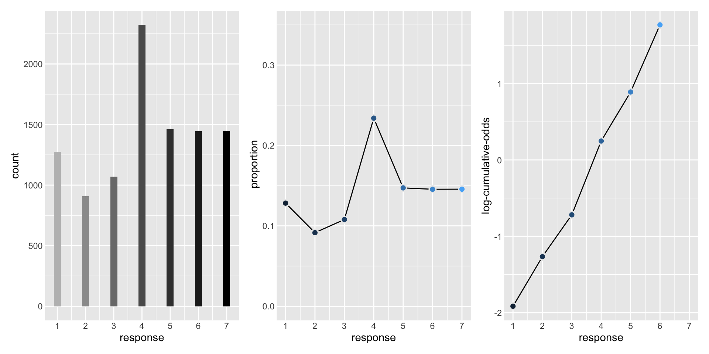
The ordered logit model
\[ \begin{aligned} \text{response}_i &\sim \operatorname{Ordered-logit}(\phi_i, \boldsymbol\alpha) \\ \text{logit}(Pr(\text{response}_i \leq k)) &= \alpha_k - \phi_i \\ \phi_i &= 0 \\ \alpha_k &\sim \operatorname{Normal}(0, 1.5) \end{aligned} \]
Where \(\phi\) is a stand-in for regression terms. Right now it is an intercept-only model. The \(\alpha_k\) are the cut points: one fewer than the number of categories (6 for a 1–7 scale).
Fitting it in brms
SR calls this an ordered logit; brms calls it family = cumulative (with a logit link by default). Same model.
glm.12 summary
Family: cumulative
Links: mu = logit
Formula: response ~ 1
Data: trolley (Number of observations: 9930)
Draws: 4 chains, each with iter = 2000; warmup = 1000; thin = 1;
total post-warmup draws = 4000
Regression Coefficients:
Estimate Est.Error l-95% CI u-95% CI Rhat Bulk_ESS Tail_ESS
Intercept[1] -1.92 0.03 -1.97 -1.86 1.00 2769 2822
Intercept[2] -1.27 0.02 -1.31 -1.22 1.00 4039 3328
Intercept[3] -0.72 0.02 -0.76 -0.68 1.00 4280 3417
Intercept[4] 0.25 0.02 0.21 0.29 1.00 4132 3678
Intercept[5] 0.89 0.02 0.84 0.93 1.00 3975 3567
Intercept[6] 1.77 0.03 1.71 1.82 1.00 4501 3505
Further Distributional Parameters:
Estimate Est.Error l-95% CI u-95% CI Rhat Bulk_ESS Tail_ESS
disc 1.00 0.00 1.00 1.00 NA NA NA
Draws were sampled using sample(hmc). For each parameter, Bulk_ESS
and Tail_ESS are effective sample size measures, and Rhat is the potential
scale reduction factor on split chains (at convergence, Rhat = 1).Back to cumulative proportions
Bring back into cumulative proportions
Code
# A tibble: 6 × 5
cut mean sd ll ul
<int> <dbl> <dbl> <dbl> <dbl>
1 1 0.128 0.00337 0.122 0.135
2 2 0.220 0.00426 0.212 0.228
3 3 0.328 0.00480 0.318 0.337
4 4 0.562 0.00504 0.552 0.571
5 5 0.709 0.00466 0.699 0.718
6 6 0.854 0.00351 0.847 0.861Quick version: plogis(fixef(glm.12)[, "Estimate"]). Compare these to the observed cumulative proportions a few slides back; the model reproduces them.
Adding predictors
\[\log \frac{\operatorname{Pr}(y_i \leq k)}{1 - \operatorname{Pr}(y_i \leq k)} = \alpha_k - \phi_i \]
\[ \text{response}_i \sim \operatorname{Ordered-logit} (\phi_i, \boldsymbol\alpha) \]
\[\phi_i = \beta x_i\]
Why is the linear model ϕ subtracted from each intercept? Because if we decrease the log-cumulative-odds of every outcome value k below the maximum, this necessarily shifts probability mass upwards towards higher outcome values. This way, a positive β value indicates that an increase in the predictor variable x results in an increase in the average response.
Shifting the cut points
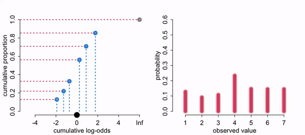
The model with predictors
\[ \begin{aligned} \text{response}_i &\sim \operatorname{Ordered-logit} (\phi_i, \boldsymbol\alpha) \\ \text{logit}(Pr(\text{response}_i \leq k)) &= \alpha_k - \phi_i \\ \phi_i &= \beta_1 \text{action}_i + \beta_2 \text{contact}_i + \beta_3 \text{intention}_i \\ &\quad + \beta_4 (\text{action}_i \times \text{intention}_i) + \beta_5 (\text{contact}_i \times \text{intention}_i) \\ \alpha_k &\sim \operatorname{Normal}(0, 1.5) \qquad \beta_1, \dots, \beta_5 \sim \operatorname{Normal}(0, 0.5) \end{aligned} \]
Fitting glm.13
glm.13 <-
brm(family = cumulative,
response ~ 1 + action + contact + intention + intention:action + intention:contact,
prior = c(prior(normal(0, 1.5), class = Intercept),
prior(normal(0, 0.5), class = b)),
iter = 2000, warmup = 1000, cores = 4, chains = 4,
data = trolley,
backend = "cmdstanr",
file = "glm.13")glm.13 summary
Family: cumulative
Links: mu = logit
Formula: response ~ 1 + action + contact + intention + intention:action + intention:contact
Data: trolley (Number of observations: 9930)
Draws: 4 chains, each with iter = 2000; warmup = 1000; thin = 1;
total post-warmup draws = 4000
Regression Coefficients:
Estimate Est.Error l-95% CI u-95% CI Rhat Bulk_ESS Tail_ESS
Intercept[1] -2.64 0.05 -2.74 -2.54 1.00 3285 2952
Intercept[2] -1.94 0.05 -2.04 -1.85 1.00 3064 3211
Intercept[3] -1.35 0.05 -1.44 -1.26 1.00 3021 3240
Intercept[4] -0.31 0.04 -0.40 -0.23 1.00 2890 2913
Intercept[5] 0.36 0.04 0.27 0.44 1.00 3034 3068
Intercept[6] 1.26 0.05 1.17 1.35 1.00 3138 3589
action -0.48 0.05 -0.59 -0.37 1.00 3071 2609
contact -0.35 0.07 -0.48 -0.22 1.00 3246 2835
intention -0.30 0.06 -0.41 -0.18 1.00 2952 3018
action:intention -0.43 0.08 -0.58 -0.27 1.00 2994 3079
contact:intention -1.23 0.10 -1.42 -1.03 1.00 3244 2897
Further Distributional Parameters:
Estimate Est.Error l-95% CI u-95% CI Rhat Bulk_ESS Tail_ESS
disc 1.00 0.00 1.00 1.00 NA NA NA
Draws were sampled using sample(hmc). For each parameter, Bulk_ESS
and Tail_ESS are effective sample size measures, and Rhat is the potential
scale reduction factor on split chains (at convergence, Rhat = 1).Coefficient posteriors
Code
glm.13 %>%
gather_draws(`b_action`,`b_contact`,`b_intention`,`b_action:intention`,`b_contact:intention`) %>%
ggplot(aes(x = .value, y = .variable)) +
geom_vline(xintercept = 0, alpha = 1, linetype = 3) +
stat_gradientinterval(.width = .95, point_size = 1, shape = 1) +
scale_x_continuous("marginal posterior", breaks = -5:0 / 4) +
coord_cartesian(xlim = c(-1.4, 0))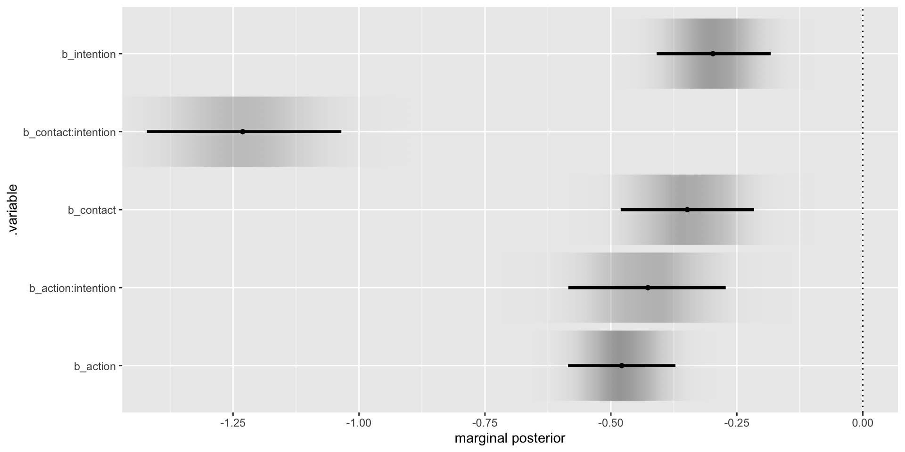
Predicted response probabilities
The clearest summary of an ordinal model. Action and intention each shift probability toward “forbidden” (1–3), and most of all together.
Code
predictions(glm.13, newdata = datagrid(action = 0:1, intention = 0:1, contact = 0)) %>%
mutate(condition = case_when(action == 0 & intention == 0 ~ "Neither",
action == 1 & intention == 0 ~ "Action only",
action == 0 & intention == 1 ~ "Intention only",
action == 1 & intention == 1 ~ "Action + intention"),
condition = factor(condition, levels = c("Neither", "Action only", "Intention only", "Action + intention"))) %>%
ggplot(aes(x = group, y = estimate, ymin = conf.low, ymax = conf.high, colour = condition)) +
geom_pointrange(position = position_dodge(width = .6)) +
scale_colour_viridis_d(end = .85) +
labs(x = "Response (1 = forbidden, 7 = permissible)", y = "Predicted probability", colour = NULL,
caption = "No-contact stories. Points are posterior means with 95% intervals.") +
theme_classic(base_size = 14) +
theme(legend.position = "top")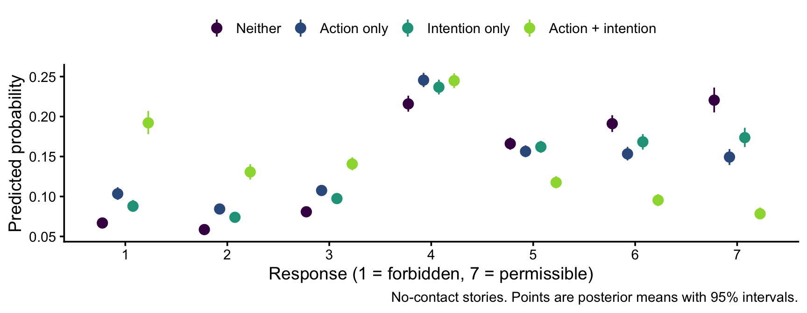
Average comparisons
Code
# The model only uses action, contact and intention, so the 9,930 rows are just 12
# distinct combinations. Averaging over those, weighted by how often each occurs,
# gives exactly the same answer as averaging over every row, and is ~800x faster.
cells <- trolley %>% count(action, contact, intention)
avg_comparisons(glm.13, newdata = cells, wts = "n")
Term Group Estimate 2.5 % 97.5 %
action 1 0.08071 0.07156 0.09034
action 2 0.03457 0.03041 0.03916
action 3 0.02633 0.02279 0.03009
action 4 0.00887 0.00483 0.01295
action 5 -0.02643 -0.02991 -0.02330
action 6 -0.05012 -0.05647 -0.04387
action 7 -0.07375 -0.08361 -0.06424
contact 1 0.14274 0.12813 0.15763
contact 2 0.04323 0.03790 0.04880
contact 3 0.01926 0.01487 0.02373
contact 4 -0.02524 -0.03076 -0.01977
contact 5 -0.04484 -0.04948 -0.04069
contact 6 -0.06059 -0.06776 -0.05367
contact 7 -0.07460 -0.08427 -0.06464
intention 1 0.09143 0.08246 0.10063
intention 2 0.04326 0.03835 0.04837
intention 3 0.02954 0.02568 0.03352
intention 4 -0.00111 -0.00540 0.00315
intention 5 -0.03507 -0.03880 -0.03137
intention 6 -0.05520 -0.06116 -0.04939
intention 7 -0.07276 -0.08156 -0.06423
Type: response
Comparison: 1 - 0Action’s effect, by intention
How much does action change the probability of each response, with and without intention?
Group intention Estimate 2.5 % 97.5 %
1 0 0.0389 0.0299 0.04809
2 0 0.0264 0.0205 0.03241
3 0 0.0264 0.0207 0.03222
4 0 0.0266 0.0205 0.03272
5 0 -0.0116 -0.0148 -0.00884
6 0 -0.0382 -0.0466 -0.02964
7 0 -0.0684 -0.0836 -0.05325
1 1 0.1286 0.1112 0.14660
2 1 0.0439 0.0382 0.04972
3 1 0.0262 0.0229 0.02973
4 1 -0.0114 -0.0166 -0.00660
5 1 -0.0434 -0.0491 -0.03775
6 1 -0.0640 -0.0721 -0.05556
7 1 -0.0801 -0.0902 -0.06949
Term: action
Type: response
Comparison: 1 - 0Predicted response distributions: action × intention
Each condition should add up to 1
Code
trolley %>%
data_grid(action = c(0,1), intention = c(0,1), contact = .5) %>%
mutate(x = interaction(action, intention)) %>%
mutate(x = fct_recode(as.factor(x),
No_A_No_I = "0.0",
No_A_Y_I = "0.1",
Y_A_No_I = "1.0",
Y_A_Y_I = "1.1")) %>%
add_epred_draws(glm.13) %>%
ggplot(aes(x = .epred, y = .category, fill = x)) +
stat_slab()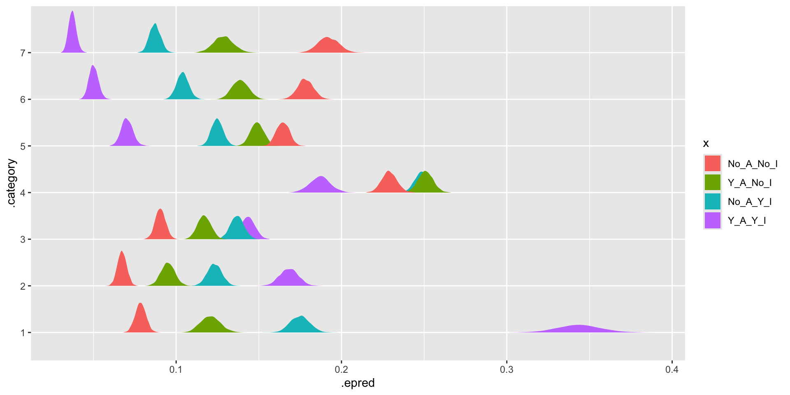
Predicted response distributions: contact × intention
Code
trolley %>%
data_grid(action = .5, intention = c(0,1), contact = c(0,1)) %>%
mutate(x = interaction(contact, intention)) %>%
mutate(x = fct_recode(as.factor(x),
No_C_No_I = "0.0",
Y_C_No_I = "1.0",
No_C_Y_I = "0.1",
Y_C_Y_I = "1.1")) %>%
add_epred_draws(glm.13) %>%
ggplot(aes(x = .epred, y = .category, fill = x)) +
stat_slab()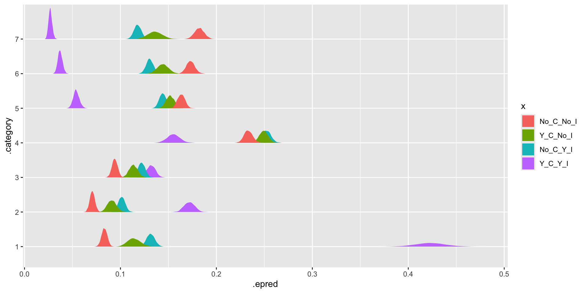
Cumulative probabilities by condition
Think as cumulative probability cut points
Code
nd <-
trolley %>%
distinct(action, contact, intention) %>%
mutate(combination = str_c(action, contact, intention, sep = "_"))
fit.13 <-
fitted(glm.13,
newdata = nd,
summary = F)
fit.13 <-
rbind(fit.13[, , 1],
fit.13[, , 2],
fit.13[, , 3],
fit.13[, , 4],
fit.13[, , 5],
fit.13[, , 6],
fit.13[, , 7]) %>%
data.frame() %>%
set_names(pull(nd, combination)) %>%
mutate(response = rep(1:7, each = n() / 7),
iter = rep(1:4000, times = 7)) %>%
pivot_longer(-c(iter, response),
names_to = c("action", "contact", "intention"),
names_sep = "_",
values_to = "pk") %>%
mutate(intention = intention %>% as.integer())
levels <- c("action=0, contact=0", "action=1, contact=0", "action=0, contact=1")
fit.13 %>%
filter(response < 7) %>%
mutate(facet = factor(str_c("action=", action, ", contact=", contact),
levels = levels)) %>%
group_by(iter, facet, intention) %>%
arrange(iter, facet, intention, response) %>%
mutate(probability = cumsum(pk)) %>%
ungroup() %>%
nest(data = -iter) %>%
slice_sample(n = 50) %>%
unnest(data) %>%
ggplot(aes(x = intention, y = probability)) +
geom_line(aes(group = interaction(iter, response), color = probability),
alpha = 1/10) +
geom_point(data = trolley %>%
group_by(intention, contact, action) %>%
count(response) %>%
mutate(probability = cumsum(n / sum(n)),
facet = factor(str_c("action=", action, ", contact=", contact),
levels = levels)) %>%
filter(response < 7),) +
scale_x_continuous("intention", breaks = 0:1) +
scale_y_continuous(breaks = c(0, .5, 1), limits = c(0, 1)) +
theme(legend.position = "none") +
facet_wrap(~facet)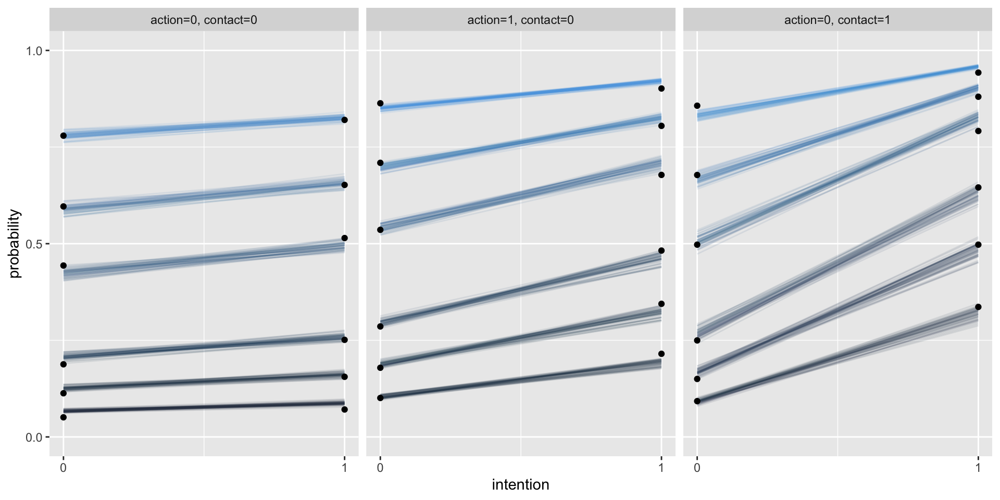
Why not treat it as continuous?
The common alternative: a Gaussian regression on the 1–7 responses.
Code
glm.13g <-
brm(family = gaussian,
response ~ 1 + action + contact + intention + intention:action + intention:contact,
prior = c(prior(normal(4, 2), class = Intercept),
prior(normal(0, 1), class = b),
prior(exponential(1), class = sigma)),
iter = 2000, warmup = 1000, cores = 4, chains = 4,
data = trolley,
backend = "cmdstanr",
file = "glm.13g")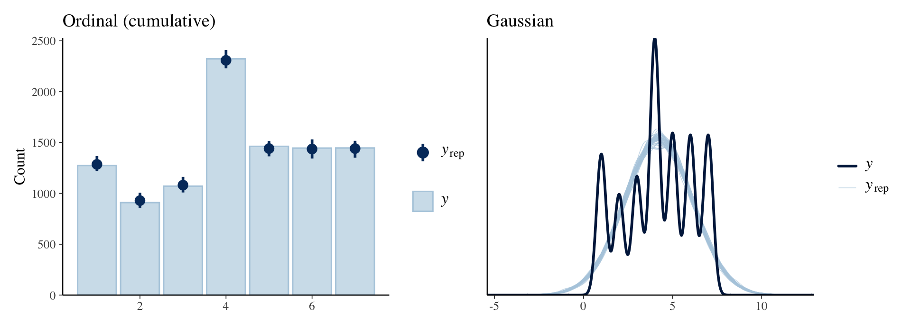
What the Gaussian gets wrong
- It can’t produce the lumpy shape (a big spike at 4, few 2s): the ordinal model matches every bar.
- 7% of its simulated responses fall below 1 or above 7, values no one could give.
- It assumes the distance from 1 to 2 equals the distance from 6 to 7. The ordinal model estimates where the cut points are instead.
- Effects can be biased, even reversed, when groups differ in variance (Liddell & Kruschke, 2018, JESP).
Unequal variances
The parameter related to latent variances is called disc (short for discrimination).
glm.14 <-
brm(family = cumulative,
bf(response ~ 1 + action + contact + intention + intention:action + intention:contact) +
lf(disc ~ 0 + action + contact + intention + intention:action + intention:contact, cmc = FALSE),
prior = c(prior(normal(0, 1.5), class = Intercept),
prior(normal(0, 0.5), class = b)),
iter = 2000, warmup = 1000, cores = 4, chains = 4,
data = trolley,
backend = "cmdstanr",
file = "glm.14")glm.14 summary
Family: cumulative
Links: mu = logit; disc = log
Formula: response ~ 1 + action + contact + intention + intention:action + intention:contact
disc ~ 0 + action + contact + intention + intention:action + intention:contact
Data: trolley (Number of observations: 9930)
Draws: 4 chains, each with iter = 2000; warmup = 1000; thin = 1;
total post-warmup draws = 4000
Regression Coefficients:
Estimate Est.Error l-95% CI u-95% CI Rhat Bulk_ESS
Intercept[1] -2.79 0.08 -2.95 -2.63 1.00 1083
Intercept[2] -2.03 0.07 -2.16 -1.91 1.00 1164
Intercept[3] -1.40 0.05 -1.50 -1.29 1.00 1331
Intercept[4] -0.31 0.04 -0.40 -0.22 1.00 1990
Intercept[5] 0.38 0.05 0.29 0.47 1.00 2093
Intercept[6] 1.31 0.06 1.20 1.42 1.00 1730
action -0.49 0.06 -0.60 -0.38 1.00 1936
contact -0.36 0.07 -0.49 -0.22 1.00 2225
intention -0.31 0.06 -0.42 -0.19 1.00 1745
action:intention -0.46 0.08 -0.63 -0.30 1.00 1844
contact:intention -1.32 0.11 -1.54 -1.12 1.00 2014
disc_action -0.01 0.03 -0.06 0.05 1.00 1234
disc_contact 0.02 0.04 -0.06 0.10 1.00 1545
disc_intention -0.02 0.03 -0.09 0.04 1.00 1133
disc_action:intention -0.13 0.04 -0.22 -0.05 1.00 1699
disc_contact:intention -0.16 0.06 -0.28 -0.06 1.00 2050
Tail_ESS
Intercept[1] 1681
Intercept[2] 1962
Intercept[3] 2468
Intercept[4] 2834
Intercept[5] 2819
Intercept[6] 2737
action 2807
contact 2902
intention 2549
action:intention 2528
contact:intention 2661
disc_action 2011
disc_contact 2294
disc_intention 2117
disc_action:intention 2536
disc_contact:intention 2613
Draws were sampled using sample(hmc). For each parameter, Bulk_ESS
and Tail_ESS are effective sample size measures, and Rhat is the potential
scale reduction factor on split chains (at convergence, Rhat = 1).Predicted response distributions with unequal variances
trolley %>%
data_grid(action = .5, intention = c(0,1), contact = c(0,1)) %>%
mutate(x = interaction(contact, intention)) %>%
mutate(x = fct_recode(as.factor(x),
No_C_No_I = "0.0",
Y_C_No_I = "1.0",
No_C_Y_I = "0.1",
Y_C_Y_I = "1.1")) %>%
add_epred_draws(glm.14) %>%
ggplot(aes(x = .epred, y = .category, fill = x)) +
stat_slab()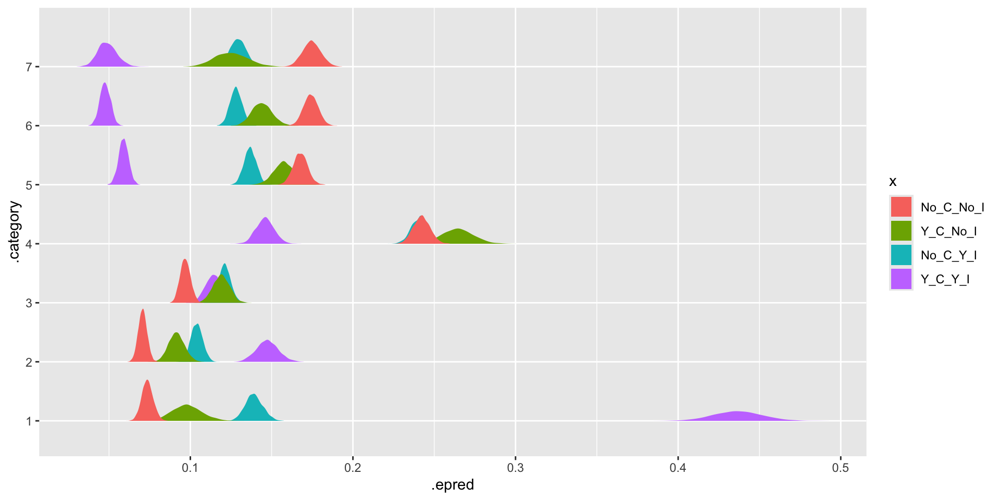
Category specific effects
Do you want to assume similar effects of your predictors across the range of your DV? Or does the effect occur only as certain differences between the categories?
For example, predicting educational attainment. Negative peer influences may have a large effect at graduating HS but little effect compared to whether or not someone goes to graduate school.
Sequential and Adjacent category models
For many ordinal variables, the assumption of a single underlying continuous variable, as in cumulative models, may not be appropriate.
sequential: years of marriage where the marriage may continue or end by divorce, but the latter can happen only if it did not happen before. For every category k there is a latent continuous variable.
Adjacent category (partial credit): Sequential models model the decision between Y = k and Y > k, whereas adjacent-category models model the decision between Y = k and Y = k + 1. Mathematically useful, lack of ordering of the threshold parameters.
Adjacent category models
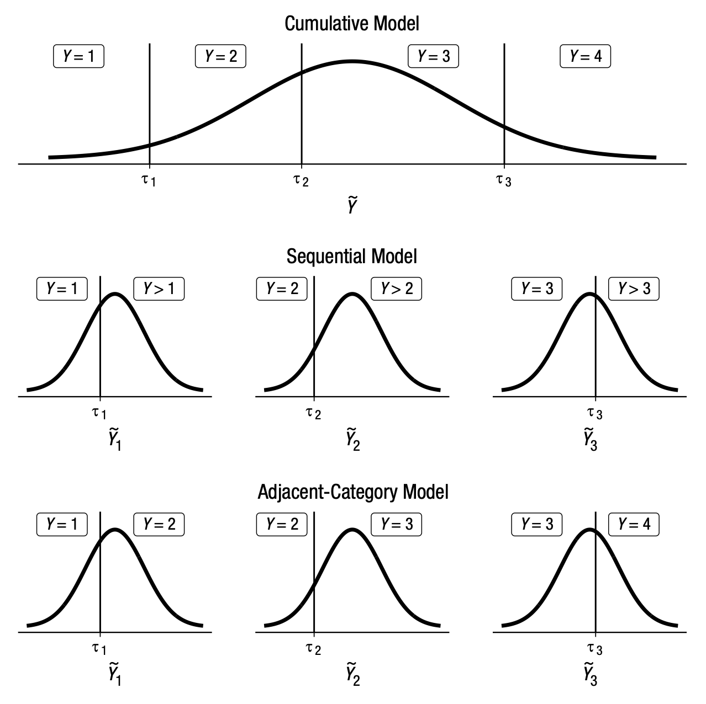
Ordinal predictors
Say you have an exercise variable: (none, 1 time a month, 1 time a week, multiple times a week, everyday). How do you model? Continuous?
Can’t you just model ordinal predictors as a series of dummy variables? But what if we want to respect the inherent order?
Monotonic effects, mo(x) in brms. Think of it as a compromise between continuous and dummy. We do not assume categories are equidistant with respect to their effect on the response variable (because then we would be using continuous). Instead, the distance between adjacent predictor categories (or integers) is estimated from the data and may vary across categories.
Extra readings
- Monotonic effects in brms (Bürkner & Charpentier)
- Ordinal regression models in psychology (Bürkner & Vuorre)